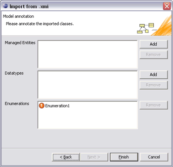

© copyright 2005, 2006, 2007 Cisco Systems, Inc. - All rights reserved
Using the XMI format, you can import UML 1.4 information models from your Tigerstripe Workbench into your Tigerstripe Projects. You can accomplish this task by completing the following two steps:
Complete the following procedure to load and validate an XMI file.
To load an XMI file
- In Tigerstripe Workbench select Tigerstripe, click Import, and select from UML Model (1.4). The Import from UML wizard opens.
- Enter the Source Folder in the Source Folder text box. This field controls the source project to where you want to import the XMI file.
- Select Use reference project (checkpoint) and enter the referenced project in the Reference project text box.
-OR-
Click Browse to navigate to the location of the project.- Click Next. The Import from UML wizard opens.
- Complete the following options in the wizard:
- XMI File: This is the full path of the XMI file that you want to import.
- Use XSLT: Select this option to apply a given XSL transformation, before the XMI file is loaded. This is necessary to accommodate for any differences between the XMI format produced by each individual UML Application. To use this functionality, complete the following procedure:
- Click Use XSLT and enter the target XSL file in the XSL File text box
-OR-- Select Browse and navigate to the directory where the target XSL file is located.
Note: Before you map the file into a Tigerstripe Artifact, the Tigerstripe application will validate the file for consistency. This is a mandatory step!- Click Validate Model.
Note: During the validation phase, the specified XSL transformation is applied.- If Tigerstripe does not detect any inconsistancies, click Next.
- If Tigerstripe detects errors or inconsistencies, locate the error or inconsistency from the list of inconsistencies that diaplsy and click View Log. After correcting the errors or inconsistencies, click Next. The following dialog box opens:

Once the XMI file is loaded and validated, you are ready to be map the content to a specific Tigerstripe Artifact. The following mapping is possible:
- Managed Entities: To identify managed entities in the imported information model.
- Datatypes: To identify Datatypes in the import information model.
- Enumerations: To identify Enumerations in the import information model.
To map XMI content
- Click Add next to the class area that you want to map: Managed Entities, Dataypes, or Enumerations. All associations and properties are mapped to Tigerstripe associations.
Note: Enumerations are directly mapped into Tigerstripe enumerations.- After mapping all classes, click Finish to complete the import.

© copyright 2005, 2006, 2007 Cisco Systems, Inc. - All rights reserved